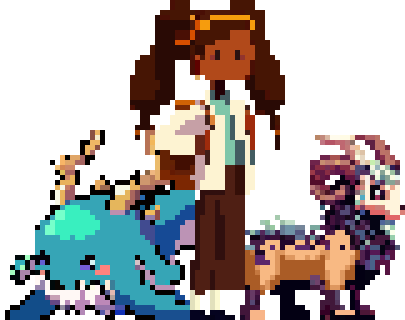

Gaddis was a passionate researcher and lover of stories, especially those her father used to tell her. Her life was dedicated to studying, defending and protecting her father's stories and ideals. In college, she spent most of her time in the library, immersed in ancient books and manuscripts that fed her thirst for knowledge.
However, one day like any other, her world was shaken. She heard voices of peers accusing her father of being crazy and that all the ideas embodied in his books were mere hallucinations. Worse, they attributed the same madness to her. Gaddis could not contain her anger and responded vehemently, "You are the crazy ones, my father is better than you could ever be."
Fed up with the unfounded accusations about her father, Gaddis decided to embark on a voyage across the Pacific Ocean. She took a small boat and brought her father's belongings and stories with her, hoping to find the place he had described in his books.
While sailing in the middle of the ocean, an unusual storm caught her in violent tides and merciless winds. She lost consciousness and when she finally awoke, she found herself on the shores of a small, seemingly deserted and unknown island in the middle of the ocean.
Determined to explore the island for resources and signs of life, Gaddis encountered a mysterious inhabitant: a huge mask with unusual limbs. This mask seemed to be somehow connected to the strange phenomena that had mutated the animals in the area. Intrigued and determined to help, Gaddis decided to collaborate with the enigmatic mask.
As they worked together to discover the reason for the mutations in the island's creatures, Gaddis realized that her partner, the mask, was not what he seemed. Behind its imposing appearance lurked a tormented spirit that had been the guardian of the island and its creatures for centuries. This entity was known as Bestiary and trusted Gaddis to correct the imbalance caused by a malevolent spiritual entity that sought to disturb the natural balance of the planet and keep secret the myths of the creatures that inhabited the island.
Together, Bestiary and Gaddis set out on a quest to find the natural habitat of the mutated species, facing deadly challenges and uncovering countless ancient secrets about the power of the elements. Over time, the bond between them grew stronger, and Gaddis began to understand the interconnectedness between humanity and the world as we know it.
The search for the truth about Greek mythological creatures and the discovery of the island's history became a journey of learning and self-reflection for Gaddis. He learned to question established beliefs and embrace ancient wisdom that had been lost to time. At the end of their odyssey, they faced one final challenge: an oversized Leviathan, a mythological creature that represented the final obstacle in their quest to restore balance and preserve the secrets of the island.
In this story, Gaddis gained knowledge not only about Greek mythological creatures, but also about the importance of protecting truth, cultures and discovery in general. Her journey transformed her into a passionate advocate for history and legends, following in her father's footsteps and ensuring that the stories of Greek mythological creatures and ancient wisdom would endure through time.
Gaddis
Role: Starring
Description: A passionate researcher with a strong emotional attachment to her father's stories. Her determination and courage make her the leader of this odyssey.
Bestiario
Role: Friend
Description: The Bestiary, an entity linked to the creatures of the island, was their guardian of secrets and harmony until the evil entity disturbed their peace. Joining Gaddis, they sought to restore balance by facing mutations and challenges.
Leviatan
Role: Enemy
Description: In the depths of the ocean, Leviathan, an ancient mythological guardian, awakens from a thousand-year sleep to threaten an island. Gaddis and Bestiary confront the colossus in a fierce battle to restore marine harmony.
Enemigo de agua
Role: Enemy
Description: El Monstruo de Agua, manifestación de la ira, manipula las mareas. Gaddis y Bestiario logran calmarlo, restaurando la paz en los océanos y fortaleciendo la conexión con la isla.
Monstruo de tierra
Role: Enemy
Description: The evil entity corrupts the earthly creatures, giving rise to the Sludge Monster. Gaddis, with knowledge and courage, purifies the land, marking another step towards the restoration of balance.
Espectro
Role: Enemy
Description: Awakened by disturbances on the island, the evil entity seeks to subdue it to its will, causing mutations and unbalancing harmony. Gaddis, with Bestiary, discovers its origin and faces an epic battle to seal it, learning about the fragility of harmony.
Chimera
Role: Enemy
Description: Mutations affect the creatures of the island, giving rise to the Chimera, symbol of corruption. Gaddis and Bestiario bravely defeat the creature, unraveling the mystery and restoring the integrity of the species.
Operating System: Windows 10
Processor: Intel Core i5 or equivalent
RAM memory: 8 GB
Graphics Card: NVIDIA GeForce GTX 960 or equivalent
Storage: 20 GB available space
🎮 The use of a controller is recommended for an optimal gaming experience.
🌐 Internet connection for online updates and features.
Thank you for joining us on this exciting odyssey! We hope you enjoy exploring the world we have created with so much love and dedication!